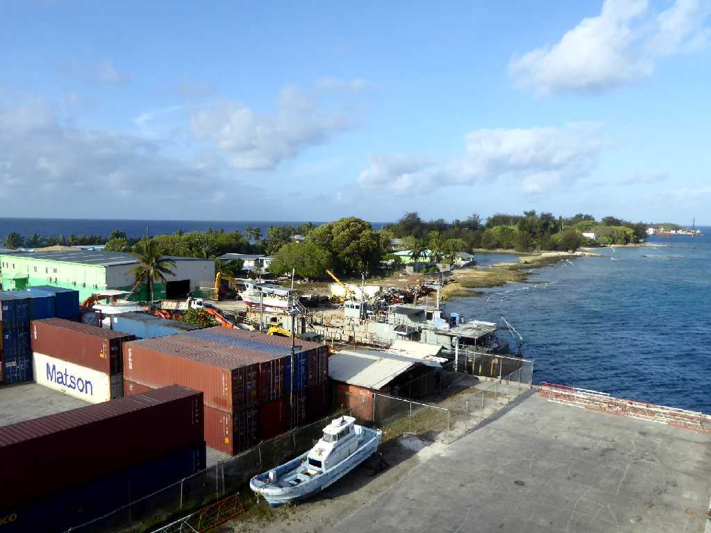
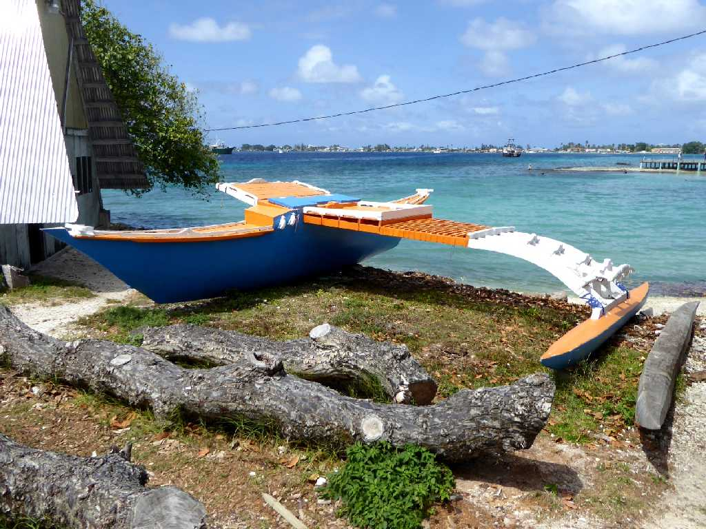
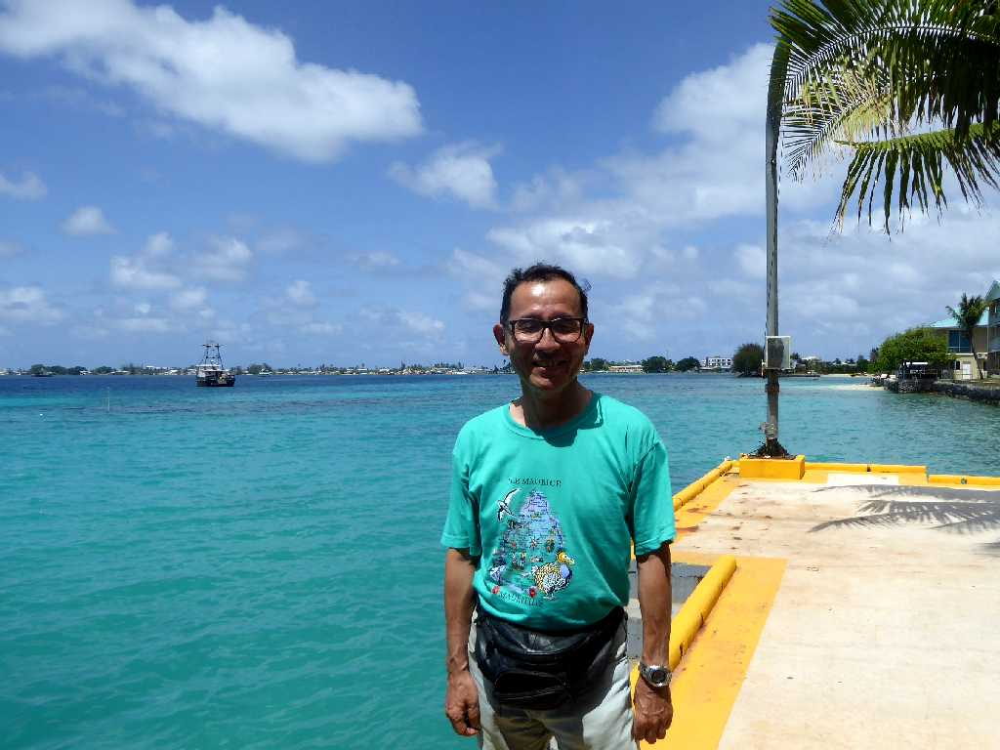
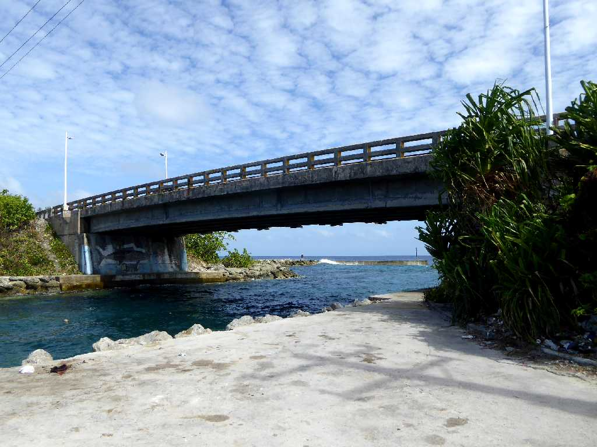
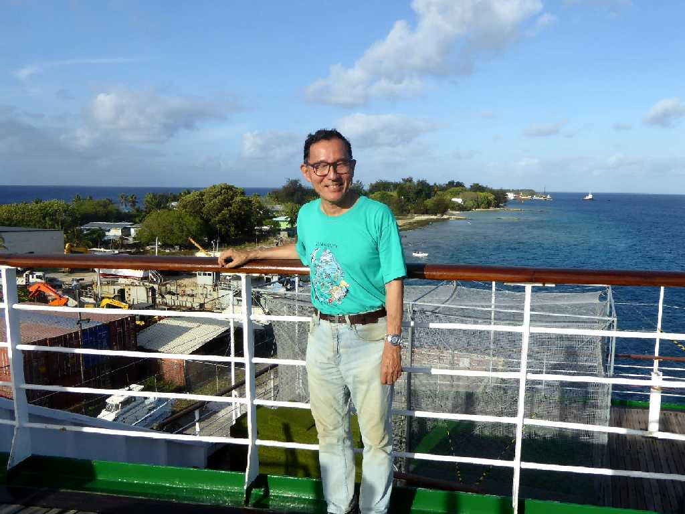

Port Majuro

Marshall Islands Resorts Majuro

March 22 2016 Marshall Islands Resorts

Majuro Bridge Lagoon Road
サンゴ礁の島で最も標高が高い場所と云われているマジュロ橋

March 22 2016 Port Majuro
地球一周の船旅出港９７日目４６,９５４ｋｍ航行しマジュロ港に着岸